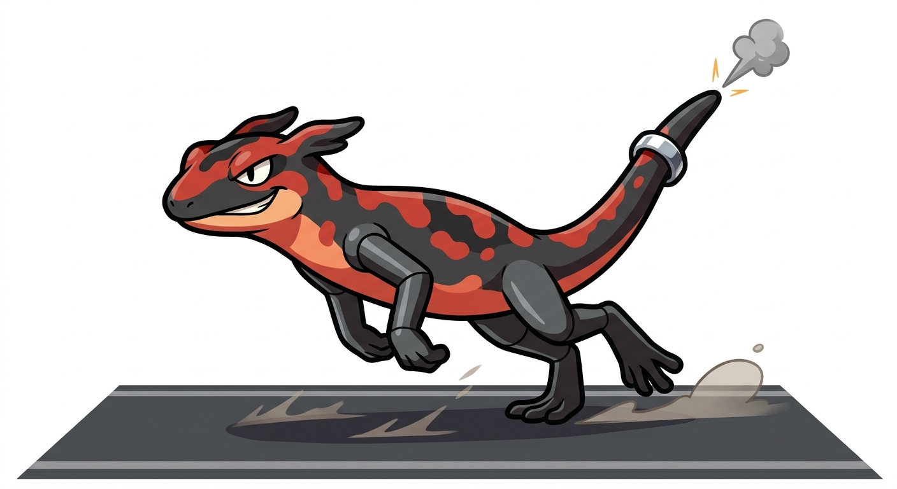

| Tipo | Fuoco |
|---|---|
| Abilità | Aiutofuoco (prima) Acceleratore (speciale) |
| Sesso | 87,5% maschi · 12,5% femmine |
| Altezza | 0,8 m |
| Peso | 19,0 kg |
| Tasso di cattura | 45 (11,9%) |
| Uovo | Gruppi Campo e Mostro 20 cicli (min. 5120 passi) |
| Pokédex regionali | Martemon #008 |
| Tasso di allevamento | Medio-lento |
| Esperienza base ceduta | 142 |
| Punti base ceduti | Totale: 2 — Velocità 2 |
| Colore Pokédex | Rosso |
| Affetto di base | 70 |
Ghisandra è un Pokémon di tipo Fuoco, stadio intermedio della linea dello starter Fuoco della regione Martemon.
Si evolve da Bracina a partire dal livello 17 e si evolve in Salambretta dal livello 36.
Ghisandra è una salamandra adolescente, lunga quanto un braccio, snella e tutta zampe. La pelle è ancora rossa e nera, ma le quattro zampe sono diventate scure e dure come ghisa, con le dita larghe che fanno rumore sull'asfalto. Sulla coda, il tratto di famiglia della sua linea, è comparso un anello di metallo vicino alla punta, e la punta stessa ora sputa ogni tanto un piccolo scoppio con una nuvoletta grigia. Ha gli occhi stretti, il muso più lungo e l'aria di chi ha sempre fretta.
Non vi sono differenze visibili tra maschi e femmine.
Ha lasciato i cortili per la strada. Sta sui marciapiedi assolati di Lambrate e sul piazzale della stazione, dove il calore sale dall'asfalto, e scatta tra i piedi della gente per sparire dietro l'angolo prima che qualcuno l'abbia vista bene. Fa le impennate, per ora solo con la coda: la drizza, fa un botto, e riparte. Non sta ferma più di dieci secondi, tranne quando è fredda; allora si stende su un tombino caldo e aspetta di ricaricarsi.
Le vie di Lambrate intorno alla stazione: via Rombon, il piazzale, i marciapiedi di via Conte Rosso dove batte il sole. Vive da sola, ma ogni Ghisandra conosce le altre della zona e le sfida a chi arriva prima al semaforo.
Calore, e ormai anche velocità: più corre più si scalda, e più si scalda più corre. In inverno rallenta, si sistema vicino alle griglie delle cucine e aspetta la primavera.
Stesse debolezze di Bracina, ma con 90 di Velocità per non aspettare che arrivino. Contro l'Acqua, in ogni caso, si ritira: una Ghisandra bagnata è una Ghisandra che non parte.
Cresce dove serve: Attacco a 80 e Velocità a 90 ne fanno già un buon attaccante fisico veloce per la parte centrale del gioco. Le difese restano fragili: colpisce per prima o non colpisce.
| Lv. | Mossa | Tipo | Cat. | Pot. | Prec. | PP |
|---|---|---|---|---|---|---|
| Inizio | Azione | Normale | Fisico | 40 | 100% | 35 |
| Inizio | Braciere | Fuoco | Speciale | 40 | 100% | 25 |
| 5 | Fumogeno | Normale | Stato | — | 100% | 20 |
| 9 | Attacco Rapido | Normale | Fisico | 40 | 100% | 30 |
| 13 | Ruotafuoco | Fuoco | Fisico | 60 | 100% | 25 |
| 17 | Rapigiro | Normale | Fisico | 50 | 100% | 40 |
| 20 | Scoppiettata | Fuoco | Fisico | 60 | 100% | 20 |
| 24 | Nitrocarica | Fuoco | Fisico | 50 | 100% | 20 |
| 28 | Rogodenti | Fuoco | Fisico | 65 | 95% | 15 |
| 33 | Lanciafiamme | Fuoco | Speciale | 90 | 100% | 15 |
| 38 | Ferrartigli | Acciaio | Fisico | 50 | 95% | 35 |
| 43 | Ferrotesta | Acciaio | Fisico | 80 | 100% | 15 |
| 48 | Fuococarica | Fuoco | Fisico | 120 | 100% | 15 |
| Mossa | Tipo | Cat. | Pot. | Prec. | PP |
|---|---|---|---|---|---|
| Protezione | Normale | Stato | — | —% | 10 |
| Lanciafiamme | Fuoco | Speciale | 90 | 100% | 15 |
| Sostituto | Normale | Stato | — | —% | 10 |
| Riposo | Psico | Stato | — | —% | 5 |
| Ferrotesta | Acciaio | Fisico | 80 | 100% | 15 |
Il grassetto indica una mossa che ha il bonus di tipo (STAB) quando viene usata da un Ghisandra. Scoppiettata è la mossa di famiglia della linea: un colpo di scappamento che parte con priorità +1, prima di quasi tutto il resto, e che ha il 10% di probabilità di scottare.
Versione Lambro — Scatta tra i piedi della gente sul piazzale della stazione e sparisce dietro l'angolo prima che qualcuno l'abbia vista bene.
Versione Martesana — Le zampe sono diventate dure come ghisa e fanno rumore sull'asfalto. Fa le impennate con la coda: la drizza, fa un botto, riparte.
La porta del quartiere. Lambrate era un comune a sé, con la sua stazione sulla linea per Venezia, ed è stata inglobata da Milano insieme agli altri comuni della cintura nel 1923. Da allora la stazione è il centro di tutto: il piazzale con i tram, le vie che ne partono a raggiera, le case operaie di via Conte Rosso, i bar dove si aspettava il turno. È il regno delle Ghisandra, che sull'asfalto caldo del piazzale trovano il calore che serve loro e nella folla che scende dai treni la corsa che cercano. I ferrovieri dicono che ogni Ghisandra ha il suo sottopasso preferito, e che non lo cambia.
Ghisandra è la salamandra di fuoco che ha preso il metallo delle fonderie: la ghisa è la lega di ferro con cui si facevano i blocchi motore e i tombini, e "ghisa" è anche, a Milano, il nome dei vigili urbani, che una volta stavano in mezzo alla strada su una pedana di ghisa. Ghisandra ha tutte e due le cose: le zampe di metallo e la strada come casa.
Ghisandra fonde ghisa e salamandra: la salamandra che si è fatta le zampe di metallo.
Il nome giapponese, テツマンダー Tetsumandā, unisce 鉄 tetsu ("ferro") e サラマンダー saramandā ("salamandra").
| Lingua | Nome | Origine |
|---|---|---|
| Giapponese | テツマンダー Tetsumandā | Da tetsu e saramandā. |
| Inglese | Ghisandra | Uguale al nome italiano. |
| Francese | Ghisandra | Uguale al nome italiano. |
| Spagnolo | Ghisandra | Uguale al nome italiano. |
| Tedesco | Ghisandra | Uguale al nome italiano. |